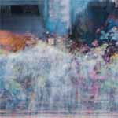
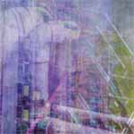
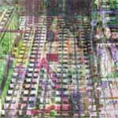
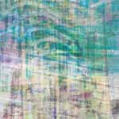

{
"UUID": "017ea4b7-61cf-470d-be72-fb79f6979cfd",
"Title": "Misc. Etc. Hong Kong",
"ShortDescription": "On a dense city",
"Year": 2019,
"FeaturedWork": "TRUE",
"URL": "misc-etc-hong-kong",
"Modality": [
"Digital"
],
"Medium": [
"Photography"
],
"Tools": [
"Digital camera",
"Illustrator",
"Photoshop"
],
"Object": [
"Digital image"
],
"Collaborators": [],
"Keywords": [
"Abstract",
"Geography",
"Self"
]
}An abstract documentation and reflection of Hong Kong's density and geography, created with hundreds of individual images taken over the course of a month.
| * | Title | Size (bytes) | View |
|---|---|---|---|
 | Ghost Walk | 205,691 | |
 | Pipework | 268,644 | |
 | Residential Walk | 238,480 | |
 | Loud Neighbourhood | 310,800 |